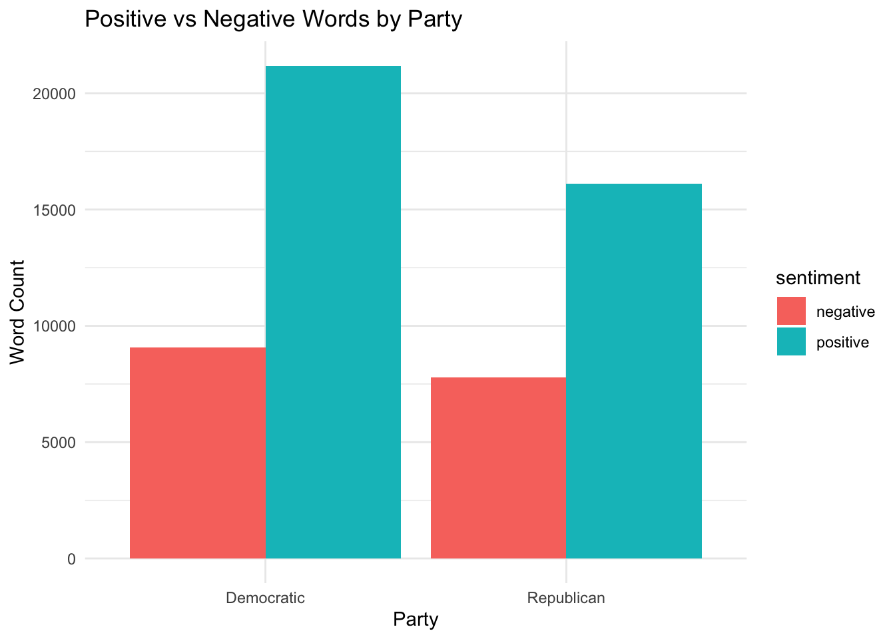
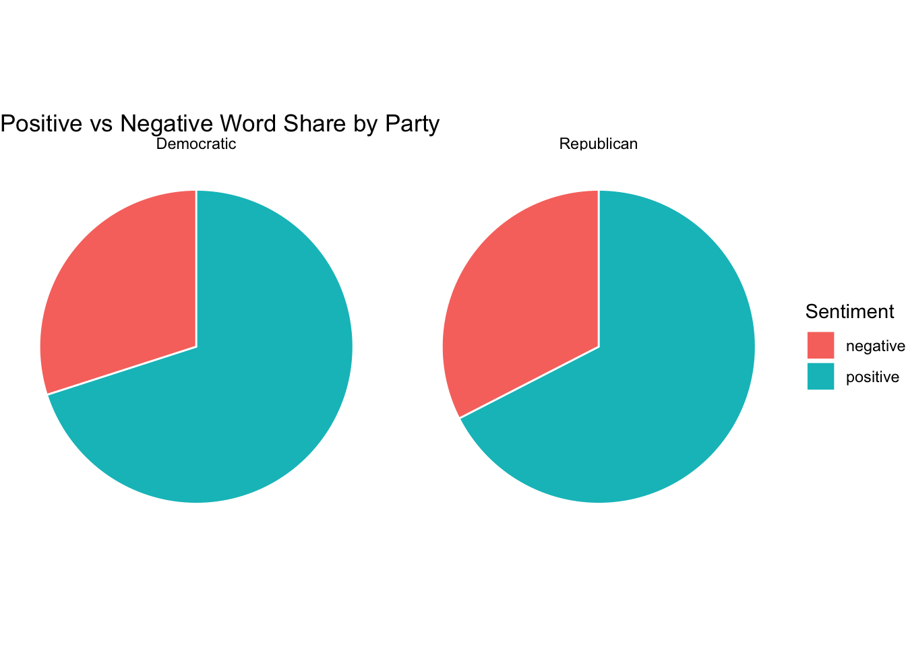

library(pacman)
p_load(tidyverse,quanteda)Text as Data: Problem Set 01
Instructions
To complete this homework, you have two options.
You can either complete this assignment using a dataset of your choice. This is a great opportunity for you to start working with a dataset that you can potentially use for your final project.
Your second option is to this dataset of social media posts from political candidates running for Congress during the 2022 U.S. Midterm election.
You can download the dataset here
To know more about the dataset, read and cite this paper: https://journals.sagepub.com/doi/full/10.1177/20563051251337541
If you want say thanks to the people who collected and shared this data with us for this class, please send a email to my colleague Maggie MacDonald
IMPORTANT: Remember to NOT commit your data to github. Github does not allow you to push large datasets to remote repositories. If you commit your dataset, you will need to reset your commit, and that’s always a bit of work. In addition, remember that your notebook should be compiled with the results of the code blocks.
Question 1
Take a small a sample of your documents and read them carefully. This sample doesn’t need to be random. Select cases that are more interesting, and close to your theoretical interest in this dataset. What are you thoughts about these documents? What did you learn after reading them?
dta<-read.csv("../data/midterm_candidates_labeled_all_May05.csv")
sampled_dta <- sample_n(dta, 20000)Question 2
Tokenize your documents and pre-process them, removing any “extraneous” content you noticed in closely reading a sample of your documents. What content have you removed and why? Any pre-processing steps from what you saw in class that you consider not to use here?
corp_dta <- corpus(sampled_dta, text_field = "text")Warning: NA is replaced by empty stringtoks_dta <- tokens(
corp_dta,
remove_punct = TRUE,
remove_numbers = TRUE,
remove_url = TRUE
) %>%
tokens_tolower() %>%
tokens_remove(stopwords("en")) %>%
tokens_remove(
pattern = "^@.*",
valuetype = "regex"
)%>%
tokens_wordstem()I removed “@user”and url, as they have nearly no contribution to text understanding, but I preserved “#hashtag”. I used all standard pre-processing steps here as at present I find no reason to not using them. I did not use N-gram as I didn’t find a reason to use it.
Question 3
Using Danny and Spirling’s Pretext, tell me which of the pre-processing steps makes a more substantive difference in the data transformation? Would you keep all these steps or would you follow the PreText recommendations? Use a sample of the data to solve this question.
p_load(preText)
corp_dta<-corpus(sampled_dta,text_field="text")
preprocessed_documents <- factorial_preprocessing(
corp_dta,
use_ngrams = FALSE,
infrequent_term_threshold = 0.2,
verbose = TRUE)
rm(corp_dta)
rm(sampled_dta)
str(preprocessed_documents, max.level = 2)
head(preprocessed_documents$choices)
preText_results <- preText(preprocessed_documents,
dataset_name = "2022_midterm_election",
distance_method = "cosine",
num_comparisons = 20,
cores=12,
verbose = TRUE)
preText_score_plot(preText_results)
regression_coefficient_plot(preText_results,
remove_intercept = TRUE)
#be notice that zero actully indicate the average influence, not "no influence".I ran on 2000 rows subset due to limited resourse. As the result shows, “remove infrequent terms” makes the biggest difference. I think it is reasonable to remove certain amount of infrequent words, as the texts are twitter and facebook posts which may have wider word coverage and bigger diversity, or typos.(the text is sparse). But the threshold for this particular dataset is unclear, as the sample size is small, it is reasonable to think that with a smaller dataset is more sensitive to removing infrequent words.
Question 4
Pick an important source of variation in your data (for example: date, author identity, location, etc.). Subset the data along this dimension, and discuss which words discriminate better each group. You can do this by using TF-IDF, PMI, log(share \(word_i\) in group a/share \(word_i\) in b), or create a measure similar to Ban’s article.
dfm_dta <- toks_dta %>%
dfm()
#I don't think in a sparse(and relatively small) dataset like this there is need for trim, so I skipped the trim step.
tfidf_dta <- dfm_dta %>%
dfm_tfidf(scheme_tf = "prop") %>%
dfm_group(party_clean, force = TRUE)
top_dem <- topfeatures(tfidf_dta["Democratic", ], n = 20)
top_rep <- topfeatures(tfidf_dta["Republican", ], n = 20)
top_dem thank vote day get elect support work go
184.46589 145.25061 78.04440 76.29548 72.43831 71.42150 68.43143 66.31630
today us make 💙 peopl right help can
65.78032 64.91256 64.37050 61.42858 60.18762 59.85509 58.78076 58.18831
great join fight time
55.16705 54.60694 53.90103 51.57294 top_rep 🇺🇸 thank vote day 🤣 great support
128.50536 116.88361 80.13604 73.20914 68.47148 64.46575 60.84453
biden get today america go american time
52.75734 51.86038 49.61408 49.39946 48.76293 46.81002 45.63691
republican elect happi work famili new
43.86200 43.65066 41.27242 40.63951 40.52507 39.60588 Using TF-IDF, it shows that the important and unique words in democratic discourse are “elect”, “peopl”, “right”, “help”, “join”, “work”, “make”, “💙”. While those in republican discourse are “🇺🇸”, “🤣”, “biden”, “american”, “america”, “back”, “🚨”, “republican”, “famili”, “😂”.
Question 5
Create a dictionary (or use a pre-existing dictionary) to measure a topic of interest in your data. It can be anything, sentiment, tone, misinformation, any topic of interest. Label your documents, and visualize the prevalence of your classes.
p_load(quanteda.sentiment,ggplot2)
data_dictionary_LSD2015_pos_neg <- data_dictionary_LSD2015[1:2]
dfm_dta_lsd <- dfm_dta %>%
dfm_lookup(dictionary = data_dictionary_LSD2015_pos_neg)
dfm_party <- dfm_group(dfm_dta_lsd, groups = party_clean)
# draw bar chart
party_counts <- convert(dfm_party, to = "data.frame")
party_counts<- party_counts %>%
pivot_longer(cols = c("negative", "positive"),
names_to = "sentiment",
values_to = "count")
options(scipen = 999)
ggplot(party_counts, aes(x = doc_id, y = count, fill = sentiment)) +
geom_col(position = "dodge") +
labs(title = "Positive vs Negative Words by Party",
x = "Party", y = "Word Count") +
theme_minimal()
# draw pie chart
party_counts <- party_counts %>%
group_by(doc_id) %>%
mutate(percentage = count / sum(count) * 100)
ggplot(party_counts, aes(x = "", y = percentage, fill = sentiment)) +
geom_col(width = 1, color = "white") +
coord_polar(theta = "y") +
facet_wrap(~doc_id) +
labs(title = "Positive vs Negative Word Share by Party",
fill = "Sentiment") +
theme_void() 
Question 6
Pick some documents (at least 10 for each class) that are exemplar (high probability) of being for each class of your dictionary. Read these documents. Now let’s try to augment a little your classifier.
#create a sentiment score by positive_counts - negative_counts, find highest and lowest for both party
pos_neg_counts <- convert(dfm_dta_lsd, to = "data.frame")%>%
mutate(sentiment_score = positive - negative)
pos_neg_counts$party <- docvars(dfm_dta_lsd, "party_clean")
top_positive <- pos_neg_counts %>%
group_by(party) %>%
arrange(desc(sentiment_score)) %>%
slice_head(n = 10) %>%
ungroup()
top_negative <- pos_neg_counts %>%
group_by(party) %>%
arrange(sentiment_score) %>%
slice_head(n = 10) %>%
ungroup()
extremes<-rbind(top_positive,top_negative)
extremes$text<-as.character(corp_dta)[extremes$doc_id]
two_groups<-extremes %>%
group_by(party) %>%
group_split()
head(two_groups[[1]],10)# A tibble: 10 × 6
doc_id negative positive sentiment_score party text
<chr> <dbl> <dbl> <dbl> <chr> <chr>
1 text1340 228 571 343 Democratic "so um like as I said…
2 text867 151 376 225 Democratic "representative to sh…
3 text14539 104 270 166 Democratic "um I have lost my vo…
4 text8282 272 401 129 Democratic "good evening I'm Mat…
5 text15738 8 47 39 Democratic "[Applause] thank you…
6 text8153 9 35 26 Democratic "This campaign has be…
7 text19229 1 26 25 Democratic "It’s Election Day! N…
8 text9722 3 26 23 Democratic "Just over 7 months a…
9 text15507 1 21 20 Democratic "Another great round …
10 text10769 4 23 19 Democratic "We take ZERO corpora…# to show the classify above is actually unreasonable
extremes[,c("positive","negative")]# A tibble: 40 × 2
positive negative
<dbl> <dbl>
1 571 228
2 376 151
3 270 104
4 401 272
5 47 8
6 35 9
7 26 1
8 26 3
9 21 1
10 23 4
# ℹ 30 more rowsObviously my sentiment score is not a good criteria, as longer texts are more sensitive to the score because they are likely to contain more emotional words. If the portion of emotional words is fixed, the longer text is, the higher its sentiment score will be. For example, if the ratio is positive/negetive=9/1, for long text with 100 emotional words, the score will be 90, but for short text with 10 emotional words, the score will simply be 9. One improvement could be using a ratio=positive_word_count/negative_word_count weighted by emotionality = sentiment_word_counts/total_word_count,
Question 6.1
Using cosine similarity, grab the closest 10 documents to each reference document you read before. Read those. How well does the cosine similarity work? Try with another measure of distance. Anything interesting there?
p_load(quanteda.textstats)
extremes_summary <- extremes %>%
group_by(party) %>%
summarise(
highest = doc_id[which.max(sentiment_score)],
lowest = doc_id[which.min(sentiment_score)],
) %>%
pivot_longer(
col = c("highest", "lowest"),
names_to = "extreme_type",
values_to = "doc_id"
)
#texts with highest and lowest score in each party
extremes_summary# A tibble: 4 × 3
party extreme_type doc_id
<chr> <chr> <chr>
1 Democratic highest text1340
2 Democratic lowest text15224
3 Republican highest text16275
4 Republican lowest text15374corp_texts <- tibble(
doc_id = docnames(corp_dta),
text = as.character(corp_dta)
)
#cosine similarity
simil_cosine_dta <- textstat_simil(dfm_dta,
margin = "documents",
method = "cosine")Warning in asMethod(object): sparse->dense coercion: allocating vector of size
1.5 GiBWarning in asMethod(object): sparse->dense coercion: allocating vector of size
3.0 GiBdf_sim = as_tibble(as.matrix(simil_cosine_dta)) %>%
mutate(names = rownames(as.matrix(simil_cosine_dta))) %>%
select(names, everything())
df_sim_text <- df_sim %>%
filter(names %in% extremes_summary$doc_id) %>%
pivot_longer(
cols = -c(names),
names_to = "doc_id",
values_to = "similarity"
) %>%
group_by(names) %>%
arrange(desc(similarity), .by_group = TRUE) %>%
slice_head(n = 11) %>%
ungroup() %>%
left_join(corp_texts, by = "doc_id")
rm(simil_cosine_dta) #due to memory limit
#euclidean distance
simil_jaccard_dta <- textstat_simil(dfm_dta,
margin = "documents",
method = "correlation")Warning in asMethod(object): sparse->dense coercion: allocating vector of size
1.5 GiB
Warning in asMethod(object): sparse->dense coercion: allocating vector of size
3.0 GiBdf_sim_jaccard = as_tibble(as.matrix(simil_jaccard_dta)) %>%
mutate(names = rownames(as.matrix(simil_jaccard_dta))) %>%
select(names, everything())
df_sim_text_jaccard <- df_sim_jaccard %>%
filter(names %in% extremes_summary$doc_id) %>%
pivot_longer(
cols = -c(names),
names_to = "doc_id",
values_to = "similarity"
) %>%
group_by(names) %>%
arrange(desc(similarity), .by_group = TRUE) %>%
slice_head(n = 11) %>%
ungroup() %>%
left_join(corp_texts, by = "doc_id")cosine similarity does not works very well, though some texts’ topics are weakly correlated through shared words. It is more likely for long text to find other texts with high(around 0.7) cosine similarity, while for short text the cosine similarity is low (around 0.25). I also tried correlation similarity, it also preforms poorly, and also longer text tend to find other texts with higher similarity while shorter text tend to find other texts with low similarity. I think ordinary distance measurement is not suitable for this dataset, as there are both long and short text, while these measurement tends to be sensetive to the lendth of text.
Question 6.2
Now, check qualitative these documents. Take a look at the top features, keyword in Context, higher TF-IDF. Would you change anything in your dictionary now that you looked in these documents?
dfm_dta_sub <- dfm_subset(dfm_dta, docid(dfm_dta) == df_sim_text$doc_id)Warning in `==.default`(docid(dfm_dta), df_sim_text$doc_id): longer object
length is not a multiple of shorter object lengthWarning in is.na(e1) | is.na(e2): longer object length is not a multiple of
shorter object lengthtopfeature_result<-topfeatures(dfm_dta_sub, 20)
df_sim_text<-df_sim_text%>%
mutate(seq_id=row_number())
df_sim_text_corp<-corpus(df_sim_text,docid_field = "seq_id",text_field = "text")
kwic_result<-kwic(tokens(df_sim_text_corp), pattern = "leadership", window = 5)
dfm_tfidf_sub <- dfm_tfidf(dfm_dta_sub, scheme_tf = "prop")
tfidf_result<-topfeatures(dfm_tfidf_sub, 20)I haven’t find enough reason to change the dictionary yet.